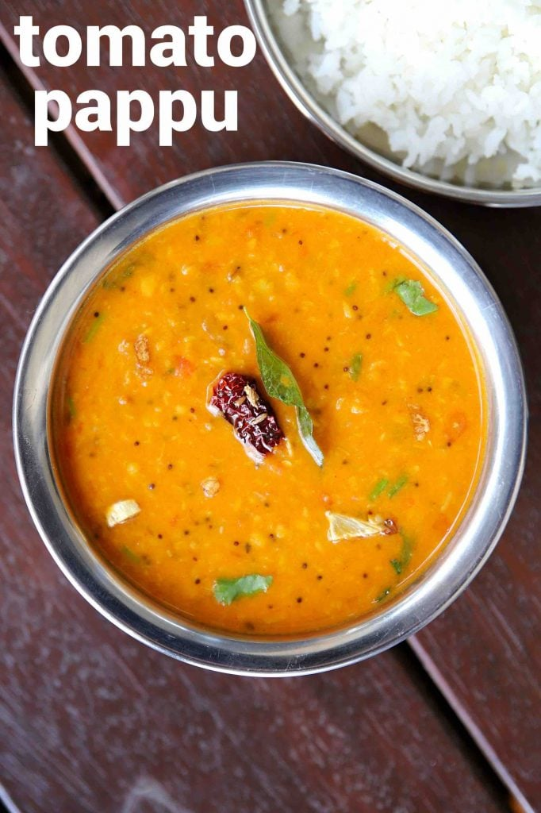

Tomato Pappu recipe

Description
Ingredients
- ¾ cup toor dal (soaked 20 minutes)
- 2 tomato (chopped)
- small piece tamarind (soaked 20 minutes)
- ¼ onion (chopped)
- ¼ tsp turmeric
Instructions
- firstly, in a pressure cooker take ¾ cup toor dal. make sure to soak dal for 20 minutes.
- add 2 tomato, small piece tamarind, ¼ onion, ¼ tsp turmeric, 1 tsp chilli powder.
- add 1 chilli, 1 tsp oil and 3 cup water.
- pressure cook for 5 whistles on medium flame or until dal is cooked completely.
- once the pressure releases, mash the dal smooth with the help of a whisk. keep aside.
Back to Top
Back to Homepage